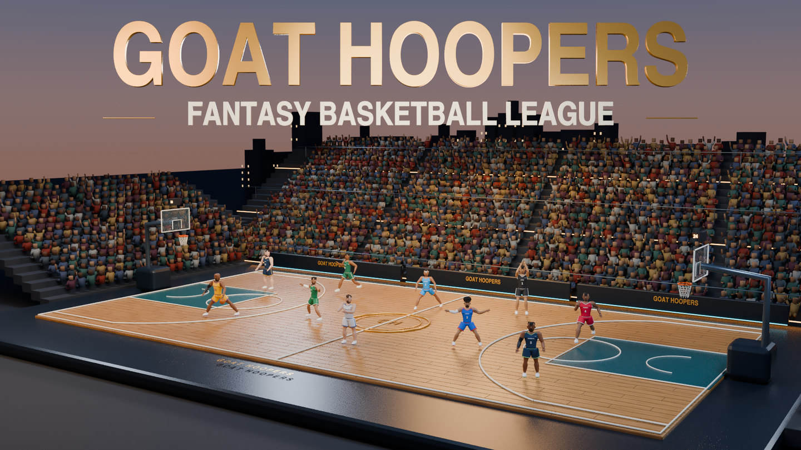
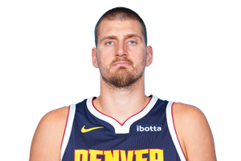
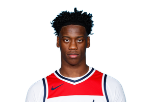

Opening-week watch Week 1 · Upcoming
Reaves getsthe champ.
A new season.
A familiar target.
Reaves Dropper went 16–5 last season. The reward for starting again? Josh Diddy’s Roster, the defending champion. The opener is still ahead. The message is already pretty clear.
If you want the crown, this is a good place to start.
Read the opening editionThe mark to beat / 2025 final
The bar
is 326.
326.0Josh Diddy’s Roster
251.5papichooter
17–4. Then the inaugural title. vannweinkauf set the standard in 2025, and everybody else is playing catch-up.
Go back to the first crown
Last season’s standard
Somebody unplug this man.
Three columns. One headache. The champ gets to call it good management.
- PPG
- 27.7
- RPG
- 12.9
- APG
- 10.7
2025–26 NBA averages. An editorial lookback, not a played 2026 fantasy-week award. Current roster: Josh Diddy’s Roster.
Jokić’s player pageFirst off the board.
Next under the microscope.
Next week / Preseason watch
No. 1 pick.
No free pass.

NeuralNets took AJ Dybantsa first in our rookie draft. We’re watching minutes, not the mixtape.
It’s a new hand on a franchise that went 1–20 as QBs Gremlins under its previous manager. That history belongs to the old regime. The No. 1 pick belongs to NeuralNets.
25.5 PPG / 6.8 RPG / 3.7 APG
2025–26 college averages · BYU. College evidence, not an NBA forecast.
Meet NeuralNetsAbout this draft & its sources
This is an unpublished source edition for Oct 5–11, 2026, presented as a local synthetic composition study. It is not a current-results page. The opener is an upcoming Week 1 pairing; no score is available. The title recap is the verified 2025 final. Player selections and commentary are editorial opinions.
Read-only fact palette: local FACTS.json, source checks dated Oct 8, 2026. Jokić’s numbers are 2025–26 NBA averages; Dybantsa’s are 2025–26 college averages. Current roster links do not establish ownership throughout those seasons. No live feeds, forecasts, prices or model results are generated here.
- Sleeper: opening-week pairings
- Sleeper: NBA preseason state
- Sleeper: rookie draft
- Sleeper: league moves
- NBA.com: Nikola Jokić
- NBA.com: AJ Dybantsa draft profile
- GOAT Hoopers: verified 2025 archive
Images: existing approved GOAT arena and player portraits. Fonts: Anton and DM Sans, local SIL Open Font License assets. This study makes no claim that the arena illustration depicts the upcoming pairing.
Same floor.
New season.